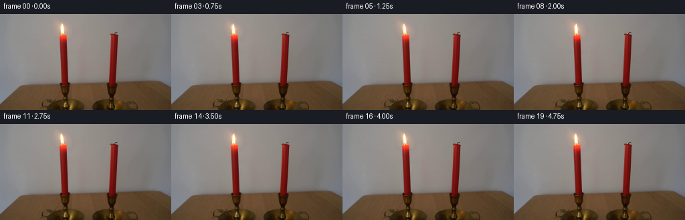
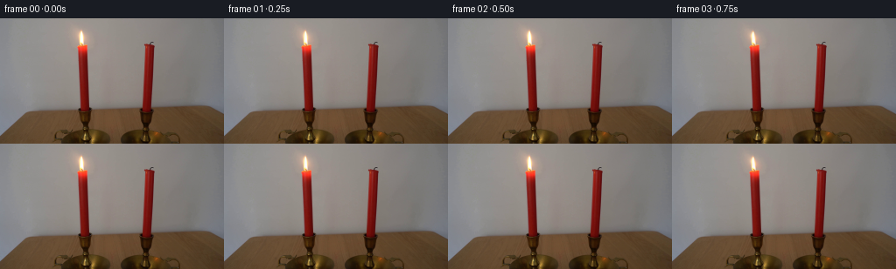
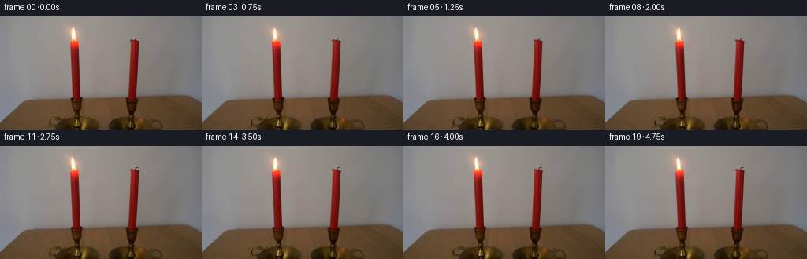
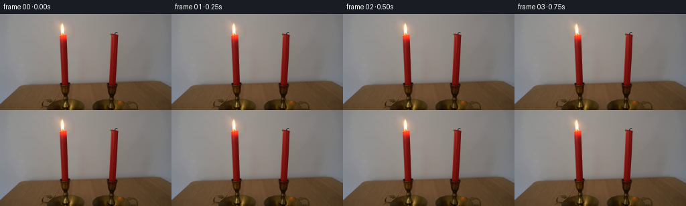

CODING AGENTS AS PIXEL WORLD MODELS
traex/DeepSeek-V4.1-Flash · 0092
点击播放 · 原生 RGB 像素
逐轮保存的候选
回放视频、检查图与代码变化。
每份候选均可单独播放。实际图片检查记录在下方工具轨迹中。
候选 01播放与检查图
点击播放 · 原生 RGB 像素


展开代码变化
--- 上一保存版本
+++ 本次保存版本
@@ -0,0 +1,137 @@
+from pathlib import Path
+
+import cv2
+import numpy as np
+from PIL import Image
+
+import artifact_io
+
+
+CASE_DIR = Path(__file__).resolve().parent
+FRAME_COUNT = 20
+FPS = 4
+
+
+def smoothstep(edge0, edge1, x):
+ t = np.clip((x - edge0) / (edge1 - edge0), 0.0, 1.0)
+ return t * t * (3.0 - 2.0 * t)
+
+
+def build_plate(image):
+ """Remove the flame so its moving light can be composited back in."""
+ mask = np.zeros(image.shape[:2], np.uint8)
+ flame_outline = np.array(
+ [
+ [85, 10],
+ [99, 10],
+ [105, 15],
+ [107, 21],
+ [104, 27],
+ [102, 31],
+ [85, 31],
+ [82, 26],
+ [80, 20],
+ [82, 14],
+ ],
+ np.int32,
+ )
+ cv2.fillPoly(mask, [flame_outline], 255)
+ plate = cv2.inpaint(image.astype(np.uint8), mask, 5, cv2.INPAINT_TELEA)
+
+ # The inpainted wall should remain gently blurred, like the out-of-focus
+ # surface around it. Feather only inside the repair, leaving frame edges intact.
+ soft = cv2.GaussianBlur(plate, (0, 0), 1.25).astype(np.float32)
+ feather = cv2.GaussianBlur(mask, (0, 0), 2.5).astype(np.float32)[..., None] / 255.0
+ return plate.astype(np.float32) * (1.0 - feather) + soft * feather
+
+
+def motion_at(frame_index):
+ """Smooth, non-repeating candle flicker over five seconds."""
+ t = frame_index / FPS
+ phase = np.array([0.48, 1.73, 0.19, 2.21, 0.83, 1.12])
+ freq = np.array([0.62, 1.43, 0.83, 1.91, 1.17, 2.37])
+
+ def wave(index, frequency=None):
+ f = freq[index] if frequency is None else frequency
+ p = phase[index]
+ return np.sin(2.0 * np.pi * f * t + p) - np.sin(p)
+
+ sway = 1.05 * wave(0) + 0.32 * wave(1)
+ height = 1.0 + 0.020 * wave(2) + 0.010 * wave(3)
+ width = 1.0 + 0.018 * wave(4) + 0.009 * wave(5)
+ pulse = 1.0 + 0.018 * wave(3) + 0.010 * wave(0)
+ bend = 0.24 * wave(2) + 0.10 * wave(5)
+ return sway, height, width, pulse, bend
+
+
+def render_frame(image, plate, frame_index):
+ if frame_index == 0:
+ return image.astype(np.uint8)
+
+ height, width = image.shape[:2]
+ source = image.astype(np.float32)
+ light = source - plate
+
+ # Keep the lower wick and candle top fixed while allowing the flame body
+ # and its halo to move. The taper also hides any residual repair texture.
+ yy = np.arange(height, dtype=np.float32)[:, None]
+ upper_weight = (1.0 - smoothstep(27.0, 31.5, yy))[..., None]
+ fixed_light = light * (1.0 - upper_weight)
+ moving_light = light * upper_weight
+
+ sway, height_scale, width_scale, pulse, bend = motion_at(frame_index)
+ base_y = 31.0
+ center_x = 94.0
+ gy, gx = np.mgrid[0:height, 0:width].astype(np.float32)
+ source_y = base_y + (gy - base_y) / height_scale
+ tip = np.clip((base_y - source_y) / 19.0, 0.0, 1.0)
+ ripple = bend * np.sin(0.72 * source_y + 0.11 * frame_index)
+ source_x = (
+ center_x
+ + (gx - center_x) / width_scale
+ - sway * tip**1.55
+ - ripple * tip**2.2
+ )
+
+ warped = cv2.remap(
+ moving_light,
+ source_x.astype(np.float32),
+ source_y.astype(np.float32),
+ interpolation=cv2.INTER_CUBIC,
+ borderMode=cv2.BORDER_CONSTANT,
+ borderValue=0,
+ )
+ result = plate + fixed_light + warped * pulse
+
+ # A very small amount of moving warm spill makes the flame feel like a
+ # physical light source without disturbing the locked-off composition.
+ pulse_delta = (pulse - 1.0) / 0.028
+ glow_y = 22.0 + 0.18 * sway
+ glow_x = center_x + 0.55 * sway
+ glow = np.exp(
+ -0.5
+ * (
+ ((gx - glow_x) / 17.0) ** 2
+ + ((gy - glow_y) / 15.0) ** 2
+ )
+ )
+ glow *= pulse_delta * 1.7
+ result += glow[..., None] * np.array([1.0, 0.42, 0.15], np.float32)
+
+ return np.clip(result + 0.5, 0, 255).astype(np.uint8)
+
+
+def main():
+ first_frame = np.asarray(Image.open(CASE_DIR / "first_frame.png").convert("RGB"))
+ if first_frame.shape != (144, 256, 3):
+ raise ValueError(f"Expected a 256x144 RGB frame, got {first_frame.shape}")
+
+ plate = build_plate(first_frame)
+ frames = np.stack(
+ [render_frame(first_frame, plate, index) for index in range(FRAME_COUNT)]
+ )
+ artifact_io.save(frames, CASE_DIR)
+
+
+if __name__ == "__main__":
+ main()
候选 02播放与检查图
点击播放 · 原生 RGB 像素


展开代码变化
--- 上一保存版本
+++ 本次保存版本
@@ -27,8 +27,8 @@
[105, 15],
[107, 21],
[104, 27],
- [102, 31],
- [85, 31],
+ [102, 29],
+ [85, 29],
[82, 26],
[80, 20],
[82, 14],
@@ -115,6 +115,8 @@
+ ((gy - glow_y) / 15.0) ** 2
)
)
+ glow_radius = np.sqrt(((gx - glow_x) / 28.0) ** 2 + ((gy - glow_y) / 25.0) ** 2)
+ glow *= 1.0 - smoothstep(0.72, 1.0, glow_radius)
glow *= pulse_delta * 1.7
result += glow[..., None] * np.array([1.0, 0.42, 0.15], np.float32)
可观测工具轨迹
实际执行的命令与返回图片。
命令 1exit 0
/bin/bash -c "pwd && rg --files -g '"'!*.mp4'"' -g '"'!*.mov'"' | sed -n '1,200p'"
命令 2exit 0
/bin/bash -c "sed -n '1,240p' GENERATION_RULES.md"
命令 3exit 0
/bin/bash -c "sed -n '1,240p' prompt.txt"
命令 4exit 127
/bin/bash -c 'ls -lah && file first_frame.png 2>/dev/null && git status --short 2>/dev/null'
命令 5exit 0
/bin/bash -c "sed -n '1,260p' artifact_io.py"
命令 6exit 0
/bin/bash -c "python3 - <<'PY'
from PIL import Image
import numpy as np
im=Image.open('first_frame.png').convert('RGB')
a=np.asarray(im)
print('size', im.size, 'shape', a.shape, 'dtype', a.dtype)
print('channel min/max/mean', [(a[...,i].min(),a[...,i].max(),round(float(a[...,i].mean()),2)) for i in range(3)])
print('unique colors', len(np.unique(a.reshape(-1,3),axis=0)))
# ascii luminance 64x36
g=np.asarray(im.convert('L').resize((64,36)))
chars=' .:-=+*#%@'
for row in g:
print(''.join(chars[min(len(chars)-1,int(v)*len(chars)//256)] for v in row))
PY"命令 7exit 0
/bin/bash -c "python3 - <<'PY'
from PIL import Image
import numpy as np
a=np.asarray(Image.open('first_frame.png').convert('RGB'))
h,w,_=a.shape
# coarse RGB per 16x9 block
for y in range(0,h,18):
row=[]
for x in range(0,w,32):
b=a[y:y+18,x:x+32].reshape(-1,3).mean(0).astype(int)
row.append('%02x%02x%02x'%tuple(b))
print(f'{y:03d}:',' '.join(row))
PY"命令 8exit 0
/bin/bash -c "python3 - <<'PY'
from PIL import Image
import numpy as np
from scipy import ndimage
im=np.asarray(Image.open('first_frame.png').convert('RGB')).astype(float)/255
mx=im.max(2); mn=im.min(2); sat=np.where(mx>0,(mx-mn)/mx,0)
for name,m in [
('bright',mx>.85),('warmbright',(mx>.75)&(im[...,0]>im[...,2]*1.15)),('saturated',(sat>.55)&(mx>.45)),('red',(im[...,0]>im[...,1]*1.35)&(im[...,0]>im[...,2]*1.35)&(mx>.35)),
('orange',(im[...,0]>im[...,1]*1.2)&(im[...,1]>im[...,2]*1.2)&(mx>.5))]:
lab,n=ndimage.label(m)
sizes=ndimage.sum(m,lab,range(1,n+1))
ids=np.argsort(sizes)[-12:][::-1]
print('\\n',name, 'pixels',m.sum(),'components',n)
for i in ids[:8]:
if sizes[i]<3: continue
ys,xs=np.where(lab==i+1)
print(int(sizes[i]),(xs.min(),ys.min(),xs.max(),ys.max()),'center',round(xs.mean(),1),round(ys.mean(),1),'mean rgb',np.round(im[ys,xs].mean(0)*255).astype(int))
PY"命令 9exit 0
/bin/bash -c "python3 - <<'PY'
from PIL import Image
import numpy as np
a=np.asarray(Image.open('first_frame.png').convert('RGB')).astype(int)
x0,x1,y0,y1=75,116,5,48
for y in range(y0,y1):
s=''
for x in range(x0,x1):
r,g,b=a[y,x]
v=(r+g+b)/3
if r>220 and g>130 and b>80: c='@'
elif r>190 and g>80 and b<100: c='O'
elif r>150 and r>g*1.5 and r>b*1.5: c='R'
elif r>120 and r>g*1.3 and r>b*1.3: c='r'
elif v>190: c='#'
elif v>150: c='+'
elif v>110: c='-'
elif v>75: c='.'
else: c=' '
s+=c
print(f'{y:03d} {s}')
PY"命令 10exit 0
/bin/bash -c "find . -maxdepth 2 -type f -printf '%p %s\\n' | sort"
命令 11exit 0
/bin/bash -c "python3 - <<'PY' mods=['numpy','PIL','scipy','cv2','imageio','matplotlib','skimage'] for m in mods: try: x=__import__(m); print(m, getattr(x,'__version__','ok')) except Exception as e: print(m,'NO',e) PY"
命令 12exit 0
/bin/bash -c "python3 - <<'PY'
from PIL import Image
import numpy as np
a=np.asarray(Image.open('first_frame.png').convert('RGB')).astype(float)
# print per row extents and mean rgb for strong red cores around each candle
for x0,x1,name in [(84,104,'left'),(157,177,'right')]:
print('\\n',name)
for y in range(10,112):
row=a[y,x0:x1]
# relative red: R exceeds G by 25 and R exceeds B by 25; bright enough
m=(row[:,0]>row[:,1]+20)&(row[:,0]>row[:,2]+20)&(row[:,0]>50)
ids=np.flatnonzero(m)
if len(ids)>=2:
print(f'{y:3d}: x{x0+ids[0]:3d}-{x0+ids[-1]:3d} n{len(ids):2d} mean {np.rint(row[ids].mean(0)).astype(int)}')
PY"命令 13exit 0
/bin/bash -c "python3 - <<'PY'
from PIL import Image
import numpy as np
a=np.asarray(Image.open('first_frame.png').convert('RGB'))
# 1-pixel classified map x=78..109, y=9..37
for y in range(9,38):
s=''
for x in range(78,111):
r,g,b=map(int,a[y,x])
if r>235 and g>190: c='W' # white hot
elif r>220 and g>140: c='Y' # yellow
elif r>210 and g>90: c='O' # orange
elif r>160 and r>g*1.6: c='R' # red
elif r>120 and r>g*1.5: c='r'
elif (r+g+b)>510: c='#'
elif (r+g+b)>390: c='+'
elif (r+g+b)>300: c='-'
elif (r+g+b)>210: c='.'
else: c=' '
s+=c
print(f'{y:02d} {s}')
print('\\n '+''.join(str(x//10%10) for x in range(78,111)))
print(' '+''.join(str(x%10) for x in range(78,111)))
PY"命令 14exit 0
/bin/bash -c "python3 - <<'PY'
from PIL import Image
import numpy as np
a=np.asarray(Image.open('first_frame.png').convert('RGB'))
for y in [10,12,14,16,18,20,22,24,26,28,30,32]:
print(y, [tuple(a[y,x]) for x in [78,80,82,84,86,88,90,92,94,96,98,100,102,104,106,108]])
PY"命令 15exit 0
/bin/bash -c "python3 - <<'PY'
from PIL import Image
import numpy as np
a=np.asarray(Image.open('first_frame.png').convert('RGB')).astype(np.int16)
# classify shape around left flame: local difference from median filter? print high-light mask
for y in range(8,42):
s=''
for x in range(75,112):
r,g,b=a[y,x]
score=(r+g+b)-3*158 # rough background
if score>400:c='@'
elif score>250:c='O'
elif score>130:c='o'
elif score>60:c='+'
elif score>20:c='-'
elif score>-20:c='.'
else:c=' '
s+=c
print(f'{y:02d} {s}')
PY"命令 16exit 0
/bin/bash -c "python3 - <<'PY'
from PIL import Image
import numpy as np
a=np.asarray(Image.open('first_frame.png').convert('RGB')).astype(float)
# estimate broad smooth background with median filter radius ~10, inspect residual around flame
from scipy.ndimage import median_filter, gaussian_filter
bg=median_filter(a,size=(17,17,1))
res=np.linalg.norm(a-bg,axis=2)
for y in range(7,42):
s=''
for x in range(70,118):
v=res[y,x]
c=' ' if v<5 else '.' if v<10 else '-' if v<20 else '+' if v<35 else 'o' if v<55 else 'O' if v<80 else '@'
s+=c
print(f'{y:02d} {s}')
PY"命令 17exit 1
/bin/bash -c 'python3 generate.py'
命令 18exit 1
/bin/bash -c 'python3 generate.py'
命令 19exit 0
/bin/bash -c "python3 - <<'PY' import cv2, numpy as np h,w=144,256 gy,gx=np.mgrid[0:h,0:w].astype(np.float32) print(cv2.remap(np.zeros((h,w,3),np.float32),gx,gy,cv2.INTER_CUBIC).shape) PY"
命令 20exit 0
/bin/bash -c 'python3 generate.py'
命令 21exit 0
/bin/bash -c "python3 - <<'PY'
from PIL import Image
import numpy as np
from pathlib import Path
fs=sorted(Path('frames').glob('*.png'))
ims=[np.asarray(Image.open(p)) for p in fs]
first=np.asarray(Image.open('first_frame.png').convert('RGB'))
print('count',len(ims),'shape',ims[0].shape,'first exact',np.array_equal(ims[0],first))
print('frame-to-frame changed pixels and mean abs diff:')
for i in range(1,len(ims)):
d=np.abs(ims[i].astype(int)-ims[i-1].astype(int))
changed=np.any(d>0,axis=2)
print(f'{i:02d}: {changed.sum():5d} px mad {d.mean():.3f} max {d.max():3d}')
# changed region outside expected local area
for i in [1,5,10,15,19]:
d=np.abs(ims[i].astype(int)-first.astype(int)).max(2)
ys,xs=np.where(d>0)
print('frame',i,'bbox', (xs.min(),ys.min(),xs.max(),ys.max()), 'outside x70:120 y5:45', ((xs<70)|(xs>120)|(ys<5)|(ys>45)).sum())
print('inspection', Image.open('inspection.png').size)
PY"命令 22exit 0
/bin/bash -c "python3 - <<'PY'
from PIL import Image
import numpy as np
from scipy.ndimage import label
from pathlib import Path
first=np.asarray(Image.open('first_frame.png').convert('RGB')).astype(float)
print('frame area centroid bbox tip_y maxRGB changed_from_prev')
prev=first
for p in sorted(Path('frames').glob('*.png')):
a=np.asarray(Image.open(p)).astype(float)
r,g,b=a[...,0],a[...,1],a[...,2]
# flame/halo warm excess and bright core
m=((r-g)>12)&((r-b)>12)&(r>170)
m[:6]=False;m[42:]=False;m[:,:65]=False;m[:,125:]=False
lab,n=label(m)
if n:
sizes=np.bincount(lab.ravel()); sizes[0]=0; k=sizes.argmax(); yy,xx=np.where(lab==k); area=len(xx)
bbox=(int(xx.min()),int(yy.min()),int(xx.max()),int(yy.max()))
core=(r>235)&(g>120)&(b>45)&(np.indices(r.shape)[1]>75)&(np.indices(r.shape)[1]<112)&(np.indices(r.shape)[0]<42)
if core.sum(): cy,cx=np.argwhere(core).mean(0)
else: cy=cx=float('nan')
else: area=0;bbox=None;cy=cx=float('nan')
d=np.abs(a-prev).mean()
print(p.stem, f'{area:4d}', f'{cx:6.2f},{cy:5.2f}', bbox, f'{d:.3f}')
prev=a
PY"命令 23exit 0
/bin/bash -c "python3 - <<'PY'
from PIL import Image
import numpy as np
# numerically inspect reconstructed backgrounds against original over static regions
from generate import build_plate
im=np.asarray(Image.open('first_frame.png').convert('RGB')).astype(float)
p=build_plate(np.asarray(Image.open('first_frame.png').convert('RGB')))
d=np.abs(p-im).max(2)
for yy in range(0,144,12):
print(yy, [int(np.percentile(d[yy:yy+12,x:x+32],99)) for x in range(0,256,32)])
PY"命令 24exit 0
/bin/bash -c "python3 - <<'PY'
from PIL import Image
import numpy as np
for idx in [0,3,6,9,12,15,19]:
a=np.asarray(Image.open(f'frames/{idx:02d}.png').convert('RGB')).astype(int)
print('\\nFRAME',idx)
for y in range(8,34):
s=''
for x in range(78,111):
r,g,b=a[y,x]
if r>245 and g>225: c='@'
elif r>235 and g>140: c='O'
elif r>210 and g>70: c='o'
elif r>160 and r>g*1.6: c='R'
elif (r+g+b)>500: c='#'
elif (r+g+b)>420: c='+'
elif (r+g+b)>350: c='-'
elif (r+g+b)>270: c='.'
else: c=' '
s+=c
print(s)
PY"命令 25exit 0
/bin/bash -c "sed -n '1,240p' GENERATION_RULES.md && printf '\\n--- prompt ---\\n' && sed -n '1,240p' prompt.txt"
命令 26exit 0
/bin/bash -c "sed -n '1,280p' artifact_io.py"
命令 27exit 0
/bin/bash -c "python3 - <<'PY'
from PIL import Image
import numpy as np
im=Image.open('first_frame.png').convert('RGB')
a=np.asarray(im)
print('size', im.size, 'shape', a.shape, 'dtype', a.dtype)
print('channels min/max/mean:', [(int(a[...,c].min()), int(a[...,c].max()), round(float(a[...,c].mean()),2)) for c in range(3)])
# coarse luminance map
g=np.asarray(im.convert('L').resize((64,36)))
chars=' .:-=+*#%@'
for row in g:
print(''.join(chars[min(len(chars)-1,int(v)*len(chars)//256)] for v in row))
PY"命令 28exit 0
/bin/bash -c "ls -la; find .tmp -maxdepth 2 -type f -printf '%p %s\\n' | head -50; test -f task_spec.json && cat task_spec.json || true"
命令 29exit 0
/bin/bash -c "sha256sum frames/*.png index.html pixels.npz > .tmp/hashes_before.txt && python3 generate.py && sha256sum frames/*.png index.html pixels.npz > .tmp/hashes_after.txt && diff -u .tmp/hashes_before.txt .tmp/hashes_after.txt && python3 - <<'PY'
from pathlib import Path
import json
import numpy as np
from PIL import Image
first=np.asarray(Image.open('first_frame.png').convert('RGB'))
frames=np.stack([np.asarray(Image.open(p).convert('RGB')) for p in sorted(Path('frames').glob('*.png'))])
assert frames.shape == (20,144,256,3), frames.shape
assert frames.dtype == np.uint8
assert np.array_equal(frames[0], first)
packed=np.load('pixels.npz')['pixels']
assert packed.shape == (144,256,20), packed.shape
rgb=np.stack([(packed>>16)&255,(packed>>8)&255,packed&255],axis=-1)
rgb=rgb.astype(np.uint8).transpose(2,0,1,3)
assert np.array_equal(rgb, frames)
html=(Path('index.html').read_text())
assert '__DATA__' not in html and '__ID__' not in html
changed=[]
for i in range(1,20):
d=np.any(frames[i]"'!=frames[i-1],axis=2)
ys,xs=np.where(d)
changed.append((int(d.sum()), int(xs.min()), int(ys.min()), int(xs.max()), int(ys.max())))
print('"'validated frames:', frames.shape, frames.dtype)
print('frame 00 exact:', np.array_equal(frames[0], first))
print('packed tensor:', packed.shape, packed.dtype)
print('per-frame changed pixel range:', min(c[0] for c in changed), max(c[0] for c in changed))
print('all motion bbox:', min(c[1] for c in changed), min(c[2] for c in changed), max(c[3] for c in changed), max(c[4] for c in changed))
print('index.html bytes:', len(html.encode()))
PY"命令 30exit 0
/bin/bash -c "python3 generate.py && python3 - <<'PY'
from pathlib import Path
import numpy as np
from PIL import Image
first=np.asarray(Image.open('first_frame.png').convert('RGB'))
frames=np.stack([np.asarray(Image.open(p).convert('RGB')) for p in sorted(Path('frames').glob('*.png'))])
print('shape',frames.shape,'dtype',frames.dtype,'first exact',np.array_equal(frames[0],first))
for i in [1,5,10,15,19]:
d=np.any(frames[i]"'!=first,axis=2)
ys,xs=np.where(d)
print(i,'"'changed',d.sum(),'bbox',(xs.min(),ys.min(),xs.max(),ys.max()))
# Verify static scene and unlit candle are exactly untouched across all frames.
for i in range(1,20):
assert np.array_equal(frames[i][:, :60], first[:, :60])
assert np.array_equal(frames[i][:, 125:], first[:, 125:])
assert np.array_equal(frames[i][45:], first[45:])
print('static-region checks passed')
PY"命令 31exit 0
/bin/bash -c "python3 - <<'PY'
from pathlib import Path
import numpy as np
from PIL import Image
from scipy import ndimage
frames=[np.asarray(Image.open(p).convert('RGB')).astype(float) for p in sorted(Path('frames').glob('*.png'))]
# brightness and connected components of flame over time
print('frame, core px, tip y, centroid x/y, bbox')
for i,a in enumerate(frames):
r,g,b=a[...,0],a[...,1],a[...,2]
m=(r>230)&(g>120)&(b>50)&(np.indices(r.shape)[0]<42)&(np.indices(r.shape)[1]>70)&(np.indices(r.shape)[1]<120)
lab,n=ndimage.label(m)
if n:
sizes=np.bincount(lab.ravel()); sizes[0]=0; k=sizes.argmax(); yy,xx=np.where(lab==k)
print(f'{i:02d} {len(xx):3d} {yy.min():2d} {xx.mean():.2f} {yy.mean():.2f} ({xx.min()},{yy.min()},{xx.max()},{yy.max()})')
# global max/min and frame luminance stability
print('frame means', [round(a.mean(),2) for a in frames])
PY"命令 32exit 0
/bin/bash -c "python3 -m py_compile generate.py && python3 generate.py && python3 - <<'PY'
from pathlib import Path
import numpy as np
from PIL import Image
first = np.asarray(Image.open('first_frame.png').convert('RGB'))
frames = np.stack([np.asarray(Image.open(p).convert('RGB')) for p in sorted(Path('frames').glob('*.png'))])
assert frames.shape == (20, 144, 256, 3) and frames.dtype == np.uint8
assert np.array_equal(frames[0], first)
assert np.array_equal(frames[:, :60], np.broadcast_to(first[:, :60], (20, 144, 60, 3)))
assert np.array_equal(frames[:, 125:], np.broadcast_to(first[:, 125:], (20, 144, 131, 3)))
assert np.array_equal(frames[:, 45:], np.broadcast_to(first[45:], (20, 99, 256, 3)))
packed = np.load('pixels.npz')['pixels']
assert packed.shape == (144, 256, 20) and packed.dtype == np.uint32
print('PASS: 20 frames, 256x144, uint8 RGB; frame 00 exact; static regions exact; tensor valid')
PY
ls -lh generate.py frames/00.png frames/19.png pixels.npz index.html inspection.png"命令 33exit 1
/bin/bash -c "python3 - <<'PY'
from pathlib import Path
import numpy as np
from PIL import Image
first=np.asarray(Image.open('first_frame.png').convert('RGB'))
frames=np.stack([np.asarray(Image.open(p).convert('RGB')) for p in sorted(Path('frames').glob('*.png'))])
for name,sl,ref in [('left',(slice(None),slice(0,60)),first[:,:60]),('right',(slice(None),slice(125,None)),first[:,125:]),('bottom',(slice(None),slice(45,None)),first[45:])]:
d=np.any(frames[sl] "'!= np.broadcast_to(ref, frames[sl].shape),axis=-1)
if d.any():
f,y,x=np.argwhere(d)[0]
print(name,'"'count',d.sum(),'first frame/y/x',f,y,x,'global y',y+(45 if name=='bottom' else 0),'x',x+(125 if name=='right' else 0))
print('first',first[y+(45 if name=='bottom' else 0),x+(125 if name=='right' else 0)])
print('frame',frames[f,y+(45 if name=='bottom' else 0),x+(125 if name=='right' else 0)])
else: print(name,'OK')
PY"命令 34exit 0
/bin/bash -c "python3 - <<'PY'
from pathlib import Path
import numpy as np
from PIL import Image
first=np.asarray(Image.open('first_frame.png').convert('RGB'))
frames=np.stack([np.asarray(Image.open(p).convert('RGB')) for p in sorted(Path('frames').glob('*.png'))])
checks=[('left',(slice(None),slice(0,60)),first[:,:60],0,0),('right',(slice(None),slice(125,None)),first[:,125:],0,125),('bottom',(slice(45,None),slice(None)),first[45:],45,0)]
for name,sl,ref,oy,ox in checks:
d=np.any(frames[:,sl[0],sl[1]] "'!= ref[None],axis=-1)
if d.any():
f,y,x=np.argwhere(d)[0]
gy,gx=y+oy,x+ox
print(name,'"'count',int(d.sum()),'first frame/y/x',f,gy,gx,'first',first[gy,gx].tolist(),'frame',frames[f,gy,gx].tolist())
else: print(name,'OK')
PY"命令 35exit 1
/bin/bash -c "python3 - <<'PY'
from pathlib import Path
import numpy as np
from PIL import Image
first = np.asarray(Image.open('first_frame.png').convert('RGB'))
frames = np.stack([np.asarray(Image.open(p).convert('RGB')) for p in sorted(Path('frames').glob('*.png'))])
assert frames.shape == (20, 144, 256, 3) and frames.dtype == np.uint8
assert np.array_equal(frames[0], first)
assert np.array_equal(frames[:, :, :60], first[None, :, :60])
assert np.array_equal(frames[:, :, 125:], first[None, :, 125:])
assert np.array_equal(frames[:, 45:, :], first[None, 45:, :])
packed = np.load('pixels.npz')['pixels']
assert packed.shape == (144, 256, 20) and packed.dtype == np.uint32
rgb = np.stack(((packed >> 16) & 255, (packed >> 8) & 255, packed & 255), axis=-1).astype(np.uint8).transpose(2, 0, 1, 3)
assert np.array_equal(rgb, frames)
html = Path('index.html').read_text()
assert '__DATA__' not in html and '__ID__' not in html
print('PASS: 20 frames, 256x144, uint8 RGB; frame 00 exact; static regions exact; packed tensor matches; player embedded')
PY"命令 36exit 0
/bin/bash -c "python3 - <<'PY'
from pathlib import Path
import numpy as np
from PIL import Image
first=np.asarray(Image.open('first_frame.png').convert('RGB'))
frames=np.stack([np.asarray(Image.open(p).convert('RGB')) for p in sorted(Path('frames').glob('*.png'))])
print('00',np.array_equal(frames[0],first))
for name,fr,ref in [
('left',frames[:,:,:60],first[None,:,:60]),
('right',frames[:,:,125:],first[None,:,125:]),
('bottom',frames[:,45:,:],first[None,45:,:]),
]:
d=np.any(fr"'!=ref,axis=-1)
print(name,fr.shape,ref.shape,'"'mismatch',d.sum())
if d.any():
f,y,x=np.argwhere(d)[0]
if name=='right': x+=125
if name=='bottom': y+=45
print(f,y,x,first[y,x],frames[f,y,x])
PY"命令 37exit 0
/bin/bash -c "python3 - <<'PY'
from pathlib import Path
import numpy as np
from PIL import Image
first = np.asarray(Image.open('first_frame.png').convert('RGB'))
frames = np.stack([np.asarray(Image.open(p).convert('RGB')) for p in sorted(Path('frames').glob('*.png'))])
assert frames.shape == (20, 144, 256, 3) and frames.dtype == np.uint8
assert np.array_equal(frames[0], first)
assert np.array_equal(frames[:, :, :60], np.broadcast_to(first[:, :60], (20,144,60,3)))
assert np.array_equal(frames[:, :, 125:], np.broadcast_to(first[:, 125:], (20,144,131,3)))
assert np.array_equal(frames[:, 45:, :], np.broadcast_to(first[45:], (20,99,256,3)))
packed = np.load('pixels.npz')['pixels']
assert packed.shape == (144, 256, 20) and packed.dtype == np.uint32
rgb = np.stack(((packed >> 16) & 255, (packed >> 8) & 255, packed & 255), axis=-1).astype(np.uint8).transpose(2, 0, 1, 3)
print('tensor/frame max diff', np.abs(rgb.astype(int)-frames.astype(int)).max())
assert np.array_equal(rgb, frames)
html = Path('index.html').read_text()
assert '__DATA__' not in html and '__ID__' not in html
print('PASS: 20 frames, 256x144, uint8 RGB; frame 00 exact; static regions exact; packed tensor matches; player embedded')
PY"保存候选 2 份；完成命令 37 次；可验证图片返回 0 张。原始 API 响应与完整日志保留在本地。